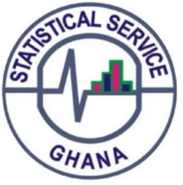

You are currently at a cross-road in need of a way to boost your income (if already employed) or sustain you (unemployed).
The reality is that as prices of goods and services go higher, the standard of living suffers if income levels do not
match with them. Thus, the need for a part-time job to cushion that effect.
In today's Ghana, part-time jobs are very sought for and I know you are reading this post because you searched for it.
Therefore, find below 3 part-time jobs in Ghana to satisfy your curiosity.
Part-Time Jobs, What are They ?
Part-time jobs are a type of employment based on work schedules that are considered flexible or temporary. A typical
part-time work involves working for short periods of time in flexible modes of operation.
It is very important to know and understand that part-time workers are sometimes considered independent workers.
That means you are sometimes responsible for expenses related to your work such as taxes, health insurance and other
benefits that come with traditional jobs.
My advice to you is that to really make it with part-time jobs, one best way is to stack jobs, which is the
tried-and-tested idea of working multiple jobs at once. When you do this, you are opening up more income
streams never will never get in a tight spot if one job ends (short periods) or becomes less feasible (pay not
worth it anymore). Take this instance, you can work with the Electoral Commission during stipulated periods and
then be writing articles for newspapers at your free time.
Due to the flexibility part-time jobs offer, you can do two or even three jobs at the same time to increase your
income. This compared to traditional jobs where you have to keep set hours is a no-brainer.
What Are The Features of Part-Time Jobs?
Flexible Work Schedule
- Allows for balancing work, studies, or personal commitments.
- Enables better work-life balance.
Skill Development
- Opportunity to gain new skills and work experience.
- Enhances time management and responsibility.
Extra Income
- Provides additional financial support.
- Helps in saving money or managing expenses.
Networking Opportunities
- Connects individuals with professionals in their field of interest.
- Opens doors for future full-time employment.
Less Stressful than Full-Time Jobs
- Reduced workload compared to full-time roles.
- More manageable work commitments.
Career Exploration
- Opportunity to explore different fields or industries.
- Helps in making informed career decisions.
Improved Time Management
- Encourages efficient use of time between work, studies, and personal life.
- Teaches skills on how to prioritize things.
Now that you understand what a part-time job is, we can dive into 3 part time jobs in Ghana now.
Job No. 1
1. The Electoral Commission of Ghana
The Electoral Commission of Ghana (EC) is one of the governance institutions provided under the 1992 constitution. The
Commission was established by the Electoral Commission Act (Act 451) of 1993. It was set up purposely to manage the
conduct of all public elections and Referenda, to handle all matters directly related to the conduct of elections in the
country.
To achieve this mandate, the EC engages a lot of Ghanaians on temporary (part-time) basis. Jobs available at the Electoral
Commission include:
- Returning Supervisors
- Registration Officers
- Exhibition Officers
- Presiding Officers
- Registration Assistants (Data Entry Clerks and Lamination Assistants)
- Exhibition Assistants
- Polling Assistants (Verification Officers, Ballot Issuers, and Name Reference List Officers)
- Technicians
NOTE:
To be eligible for these jobs, you must meet the qualification requirements of the Commission. You can find out more information by reading the article below.
Related Posts
- 3 Biblical Principles Concerning Investment
- 3 Ways To Make Money Online for Ghanaians
- 3 Proven Reasons Why People Lose Money in Investment
Job No. 2
The Ghana Statistical Service
The Ghana Statistical Service (GSS) set up by the Statistical Service Act, 2019 (Act 1003), is established as the central
statistics producing and co-ordinating institution for the National Statistical System and to strengthen the production of
quality, relevant, accurate and timely statistical information for the purpose of national development.
The GSS is mandated to amongst other things:
(a) Provide leadership and direction for the efficient, consistent and comprehensive collection, processing, analysis,
documentation and storage of statistical information within the National Statistical System;
(b) Collect, compile, analyse, abstract, publish and disseminate statistical information related to the commercial,
industrial, financial, social, demographic, economic and other activities and conditions of the people or this country
through the conduct of surveys and national censuses, including population, housing, economic and agricultural censuses;
(c) Develop, create awareness and operationalize the code of ethics and practice for the production and use of data to
ensure quality of statistics with respect to relevance, accuracy and reliability, coherence and comparability, sustainability,
continuity, timeliness, topicality and integrity;
Source: Ghana Statistical Service website.
To carry out this mandate effective, the GSS requires the energy and youthful exuberance of the population to do that.
Thus the need to recruit part-time workers as and when the need arises. Find below some temporary positions avalable at
the Ghana Statiscal Service:
- Field Supervisors
- Field Enumerators
- Consultants
NOTE:
Note that to be eligible for these jobs, you must meet the qualification requirements of the Service. You can find out more information by accessing their website below.
Job No. 3
Private School Tutor
Getting engaged in a private school is one of the best paid part time jobs in the country at the moment. Private schools
include basic, second cycle, and tertiary institutions that are owned by individuals.
There are lots of private schools springing up of late for these two reasons amongst others. Firstly, the increase in
population has created the need for more schools to be opened to absorb all those who cannot get admission into the public
schools. Secondly, the seemingly lack of quality education has resulted in most parents rather preferring private schools
despite the huge amount of fees charged by these institutions.
The increase in numbers and subsequent increase in student population in these schools means that the services of tutors are
readily needed. It is worthy to note that, due to operational costs and legal requirements, almost all these schools prefer
engaging tutors on part time basis.
NOTE:
Note that many basic private schools require at least an HND or First Degree qualification to be eligible to teach.
!!!Keep watching this space for more part-time jobs and offers.!!!
How Much Can You Make in a Part-Time Job?
These part-time jobs make payments (fixed or flexible) depending on duration(EC and GSS), commitment and quality of work (Private schools).
- Electoral Commission of Ghana allowance rates ranges from GHS130 to GHS2000*.
- Ghana Statistical Service allowance rates ranges from GHS2000 to GHS2950*.
- Private Tutor salary ranges from GHS400 to GHS1500*.
Frequently Asked Questions
All the part-time jobs listed pay well and like I said earlier, how much you earn depends on how committed and dedicated you are.
Exactly, part-time jobs offer so much flexibility that you can stack two or even three jobs at a time.
Payments for work done for all the above listed part-time jobs usulally do not take that long to receive. I will recommend the private tutor jobs as the most quickest amongst the three.
No. Part-time jobs should only be a stepping stone to land a more permanent income stream. Beware that part-time jobs can dry up or die off without notice and I believe that will not augur well for you.

Comments